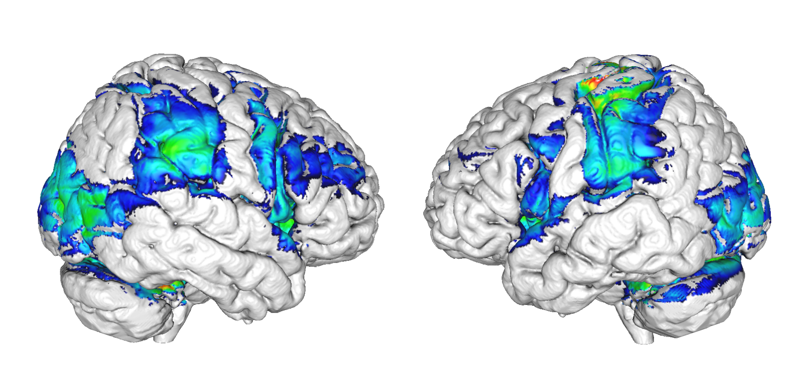
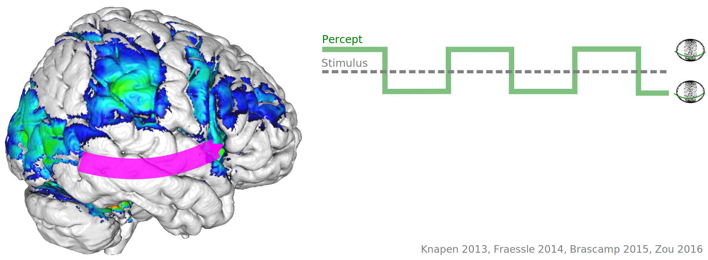
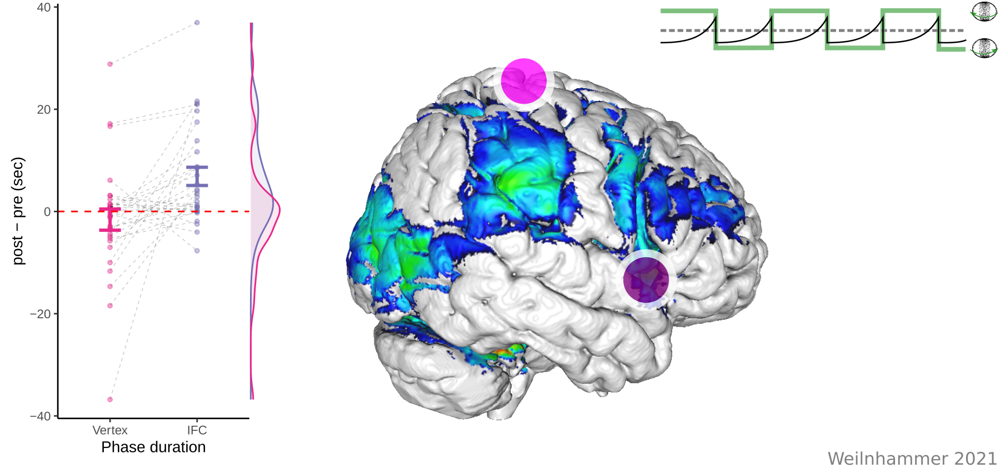
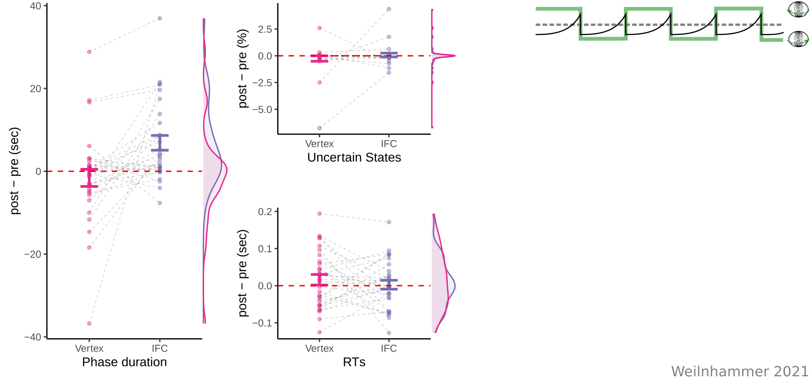
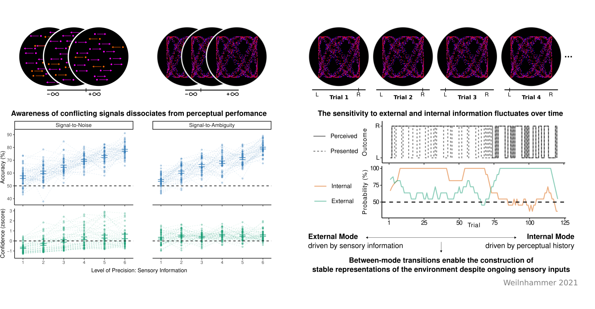
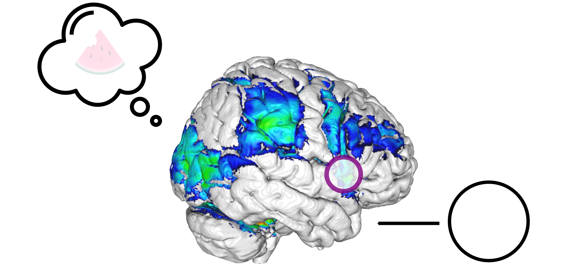

An active role of prefrontal cortex in conscious experience
Authored by Veith Weilnhammer and The Visual Perception Lab
Conscious Experience

Sensory Inputs

Motor & Executive Function

Attention

Experimental Dissociation

Bistable Perception

Bistable Perception

Bistable Perception

Bistable Perception

Predictive Coding

Predictive Coding

Predictive Coding

Predictive Coding

Predictive Coding

Predictive Coding
Model-based fMRI

- Prediction errors are encoded in IFC and V5/hMT+.
Model-based fMRI

- Prediction errors are fed forward from V5/hMT+ to IFC.
Model-based fMRI

- Perceptual content can be decoded from V5/hMT+.
Model-based fMRI

- Prediction errors are generated in suppressed V5/hMT+ voxels.
Feedforward Processing

- Suppressed voxels in V5/hMT+ encode perceptual conflict.
- IFC receives feedforward information about perceptual conflict.
Feedback processing

- Is the prefrontal representation of perceptual conflict relevant for conscious experience?
- Causal intervention: Theta-burst induces virtual lesions in prefrontal cortex.
TMS

TMS

TMS

TMS

TMS

Hybrid model
- IFC detects and resolves perceptual conflict during bistable perception.
- Prefrontal cortex regulates the access of conflicting information into awareness
Summary

Outlook
Confidence

Confidence

Confidence

Computational Psychiatry

Computational Psychiatry

Computational Psychiatry

Computational Psychiatry

Thanks a lot for your attention!
Literature
Weilnhammer, Fritsch, Chikermane, Eckert, Kathak, Stuke, Sterzer. An Active Role of Inferior Frontal Cortex in Conscious Experience. Current Biology 2021.
Weilnhammer VA, Chikermane M, Sterzer P. Bistable perception alternates between internal and external modes of sensory processing. iScience 2021
Weilnhammer, Lukas, Eckert, Stuke, Heinz, Sterzer. Psychotic Experiences in Schizophrenia and Sensitivity to Sensory Evidence. Schizophrenia Bulletin 2020.
Weilnhammer, Stuke, Sterzer, Schmack. Hierarchical Predictions for Perceptual Decisions. Journal of Neuroscience 2018.
Weilnhammer, Stuke, Hesselmann, Sterzer, Schmack. A Predictive Coding Account of Bistable Perception. PLOS Computational Biology 2017.
Schmack, Weilnhammer, Heinzle, Stephan, Sterzer. Learning what to See in a Changing World. Frontiers in Humans Neurocience 2016.